Enterprise SaaS · LRN Catalyst · 0 → 1 product
Phishing Simulation — an enterprise application for cybersecurity compliance.
Designing the phishing simulation capability inside LRN Catalyst from the ground up: campaign creation, a reusable template library, simulation configuration, and the analytics that turn employee behaviour into measurable risk.

Summary
Mission
LRN Catalyst is a SaaS platform that helps organisations manage ethics, compliance and risk programmes — delivering training, managing policies and regulatory requirements, monitoring risk and employee behaviour, and strengthening ethical workplace culture. It supports 3,000+ organisations globally. The brief was to design the end-to-end phishing simulation experience within Catalyst, so security teams could create campaigns, manage phishing templates, configure simulations and analyse employee behaviour through reporting dashboards — without leaving the platform.
My contributions
I was responsible for designing the phishing simulation capability from the ground up — a 0 → 1 product inside an established platform. Working closely with Product Managers and Engineering, I defined the product experience, translated requirements into scalable workflows, and made sure the result was usable by security and compliance administrators who are not necessarily technical. That covered the campaign creation workflow, a reusable phishing template management system, simplified configuration settings, and the reporting flows, from concept through to launch.
Impact
Catalyst Phishing replaced third-party tools with an integrated capability: campaigns, templates, training triggers and reporting in one place.
The problem: phishing lived outside the platform.
The organisation relied on third-party phishing simulation tools. They worked, but they created four recurring problems for the people running them.
Complex campaign setup
Security administrators had to work through multiple complicated steps to configure a campaign, making the process time-consuming and hard to manage.
Limited template reusability
Phishing email templates often had to be recreated for every campaign, adding operational effort and reducing efficiency.
Fragmented workflows
Running phishing outside Catalyst meant switching between systems, which broke the administrator's flow and separated phishing from the rest of the compliance programme.
Limited behavioural insight
Existing tools focused on awareness training rather than measuring real employee behaviour, so risk patterns were hard to identify and security outcomes hard to improve.
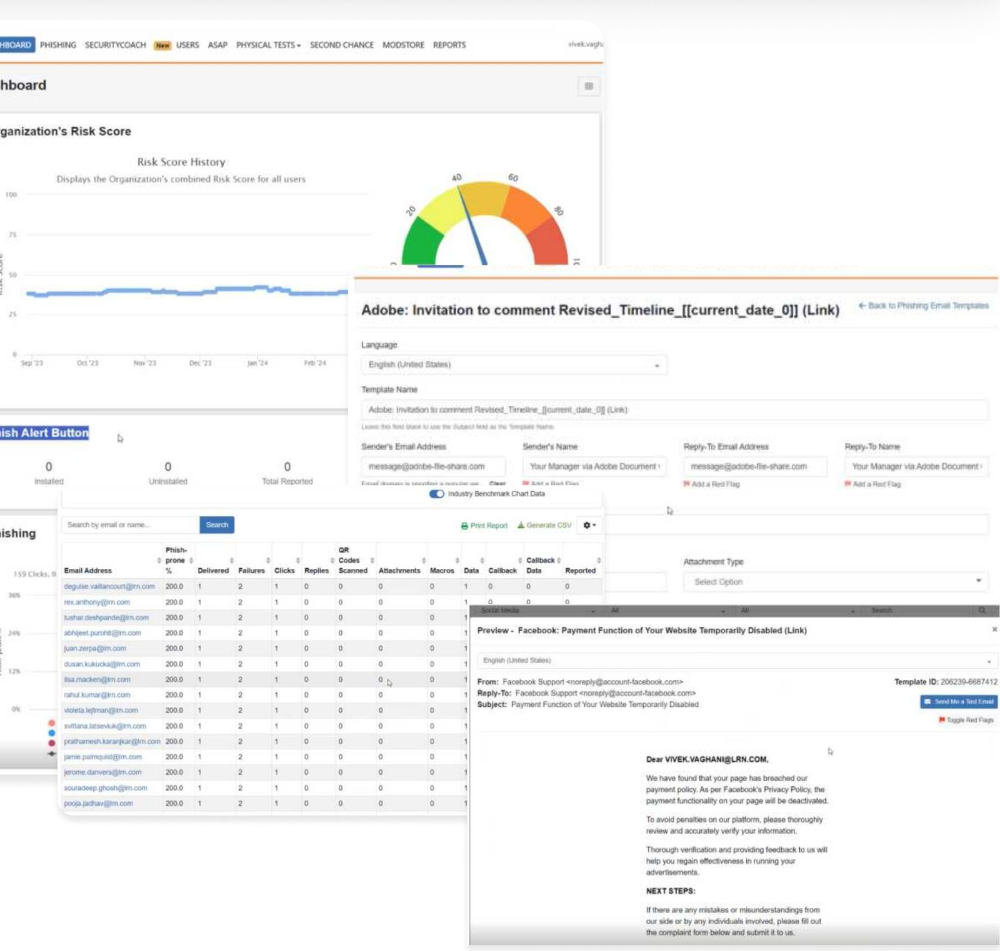
Design process
An iterative loop of discovery, ideation, prototyping and validation — each round narrowing the workflow before anything went to high fidelity.
Discovery
Worked with product managers and stakeholders to understand phishing simulation workflows, user needs and platform constraints.
Ideation & wireframing
Low-fidelity wireframes to explore campaign creation, template management and reporting structures.
Prototyping
Interactive prototypes to visualise user flows and refine usability before build.
Validation
Tested with internal stakeholders and engineering to make sure the solution was intuitive, scalable and aligned with user needs.
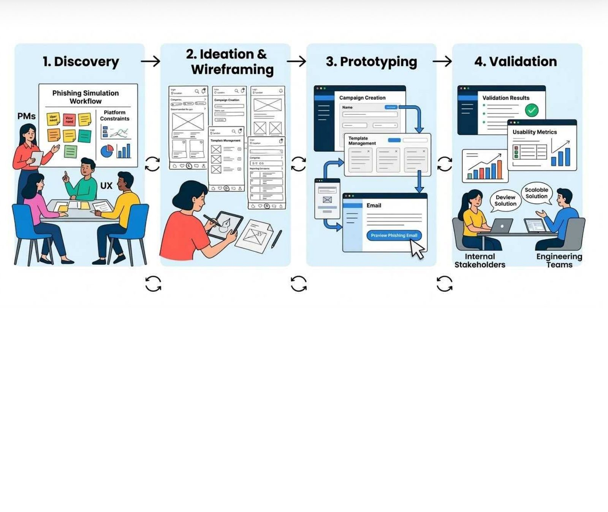
Who we designed for.
Two administrators with the same screen and different questions: one runs the campaigns, the other has to answer for the results.
Michael Carter — Security Administrator
Austin, USA · 38 · 12+ years in cybersecurity & security operationsGoals
- Run phishing simulations across departments
- Identify high-risk users and teams
- Monitor employee responses to phishing attempts
- Improve overall security awareness in the organisation
Pain points
- Complex campaign configuration
- Recreating phishing templates for every campaign
- Limited visibility into employee behaviour
- Difficulty managing multiple campaigns simultaneously
David Okafor — Compliance & Risk Manager
Austin, USA · 42 · 15 years in compliance & risk managementGoals
- Improve employee security behaviour
- Track phishing training outcomes
- Monitor organisational cyber risk
- Ensure regulatory compliance
Pain points
- Lack of clear behavioural insights
- Difficulty linking phishing results with training programmes
- Limited reporting for compliance tracking
- Hard to identify high-risk departments quickly
Campaign creation workflow.
Simplifying campaign creation was the core design challenge. The final workflow has four stages, and templates and user groups are reusable objects, so the second campaign is faster than the first.
Create campaign
Administrators define the campaign details:
- Campaign name
- Target audience
- Simulation schedule
Select or create template
Choose from 50+ phishing templates modelled on real scenarios, or create a custom one. Templates are reusable across campaigns.
Configure simulation
Settings that make the simulation mirror a real threat:
- Landing pages
- Simulation difficulty
- Target user groups
Monitor results
Built-in analytics dashboards that surface:
- Click rates
- Credential submissions
- User-level behaviour insights
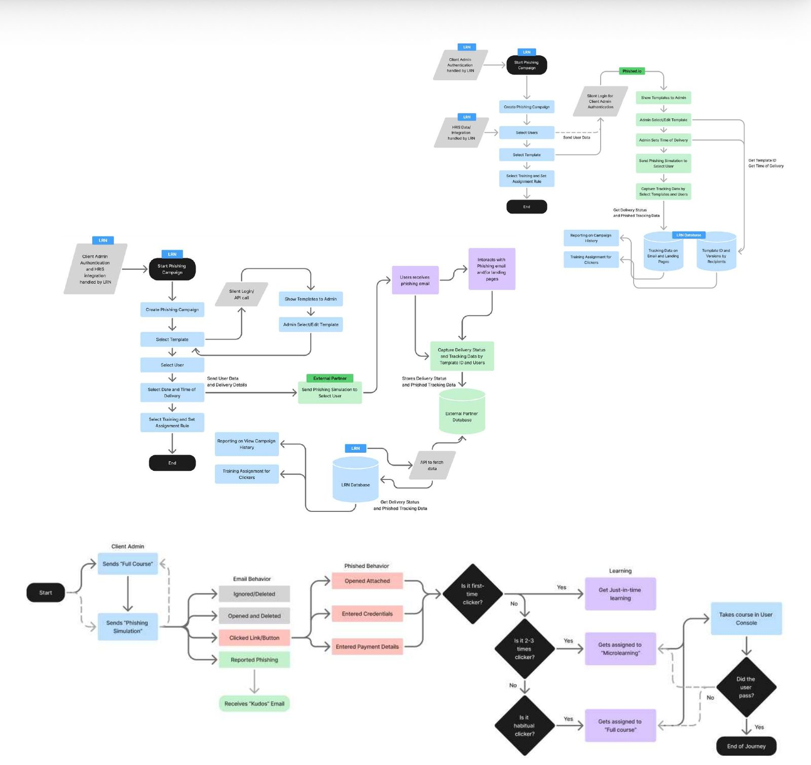
The solution: Catalyst Phishing.
An integrated phishing simulation capability inside Catalyst, built to help organisations run smarter campaigns.
Real-world phishing simulations
Simulations mirror modern phishing attacks and social-engineering tactics rather than generic email lures.
Behaviour-based training
Training is triggered when risky behaviour is detected — clicking a phishing link or entering credentials.
Integrated platform experience
Campaigns, templates and reporting are managed directly within Catalyst, eliminating third-party tools.
Flexible campaign management
Administrators run campaigns using 50+ customisable templates based on real phishing scenarios.
Key features
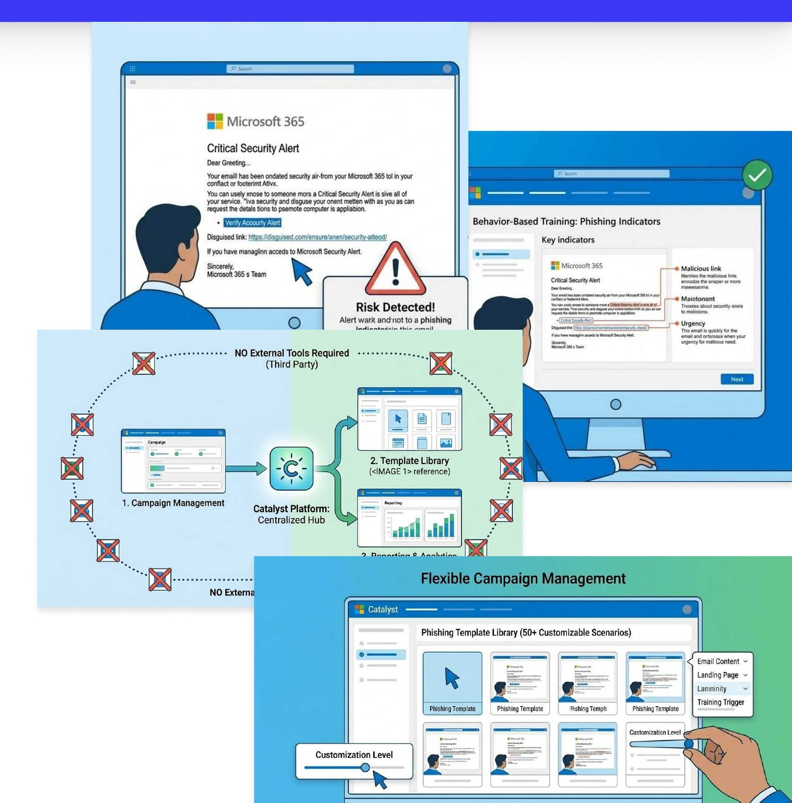
The final solution.
Campaign management dashboard
A centralised view of every campaign — status, phishing-prone metrics, user groups and timelines — so an administrator can see the whole programme at a glance.
UX improvements
- Clear campaign status indicators for quick monitoring
- Structured data table for improved readability
- Search and filter for faster campaign discovery
- Action controls for quick campaign management
- Simplified navigation within the phishing module
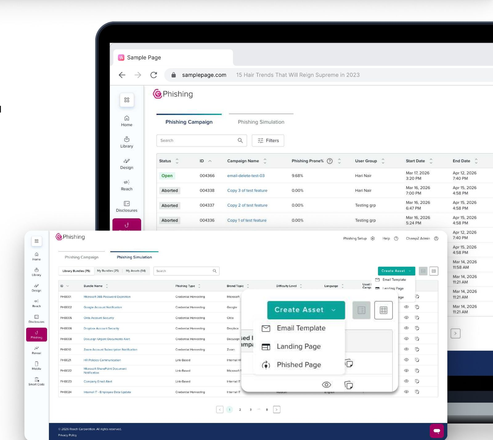
Asset library
Lets administrators manage and organise the assets used to run campaigns — pre-built phishing templates, landing pages and "phished" pages — in one place.
- Centralised asset library
- Asset categorisation
- Multiple asset views
- Quick asset creation
- Usage tracking
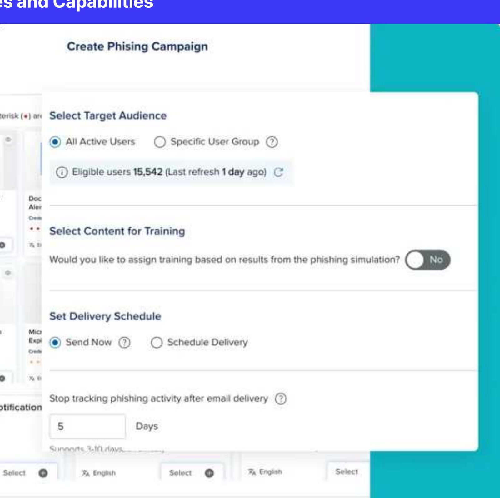
Campaign insights & user-level tracking
A detailed view of campaign performance and individual responses. Administrators can monitor activity, track how employees interact with phishing emails, and identify high-risk behaviour across the organisation.
Key functions
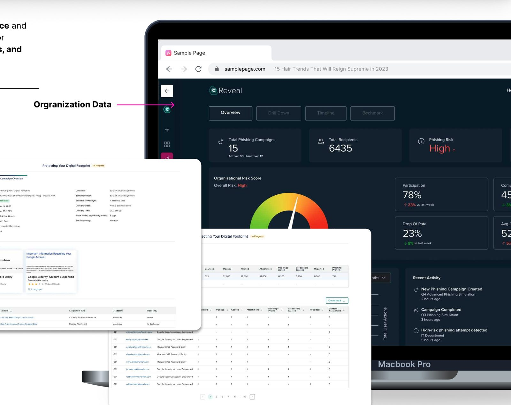
Live production screens.
What shipped inside Catalyst — captured from the live product.
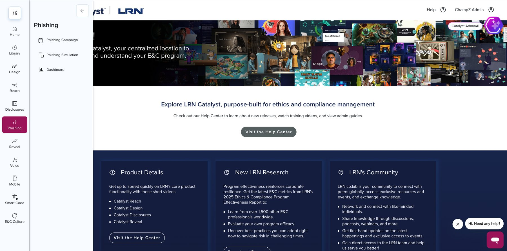
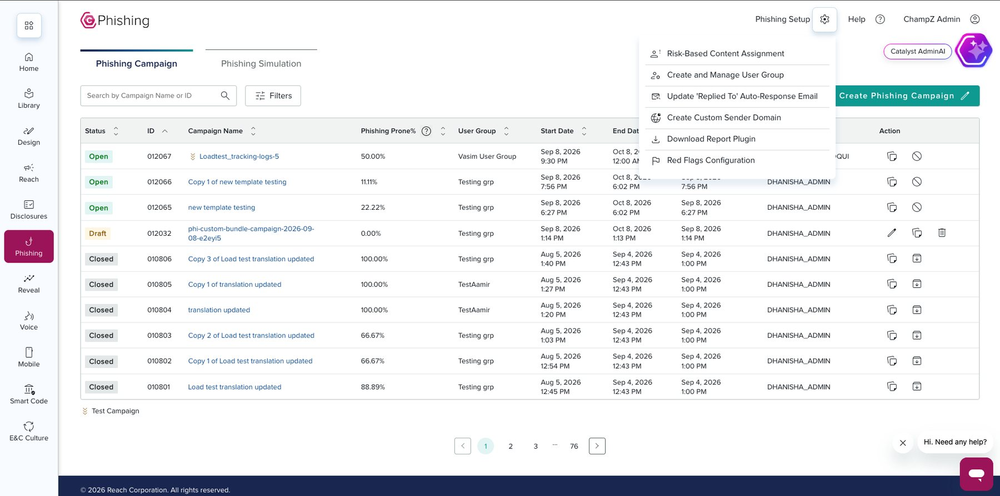
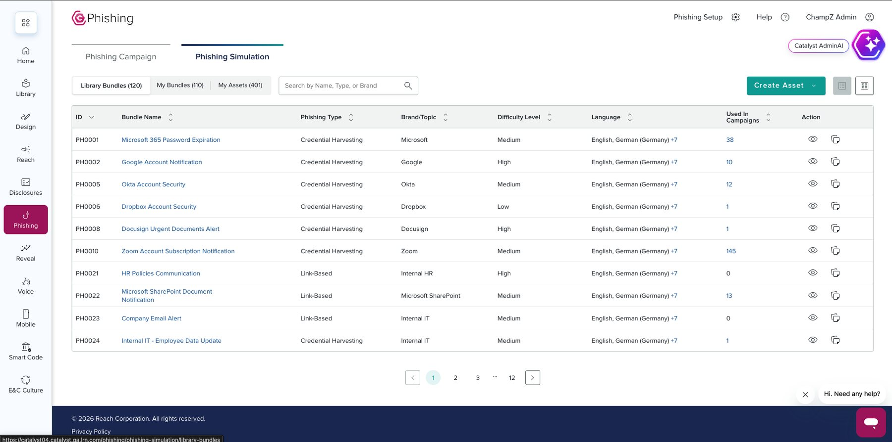
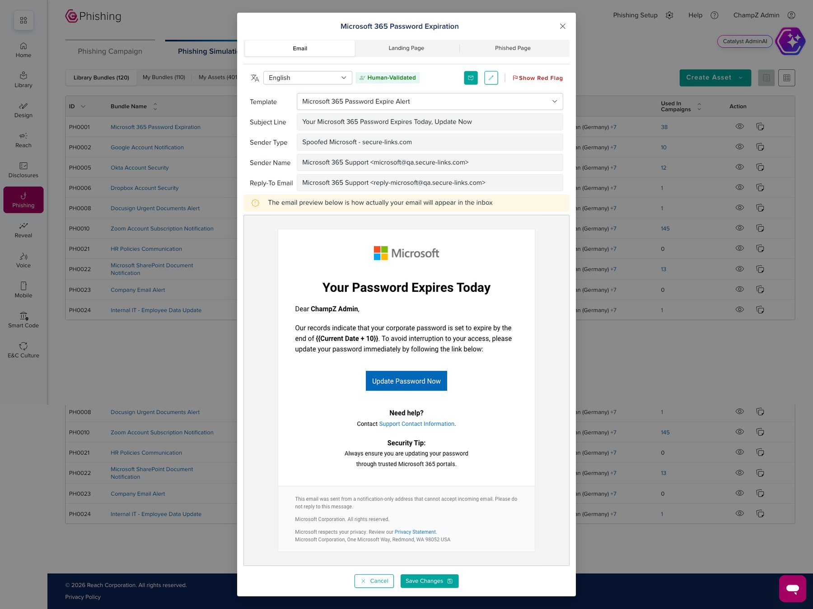
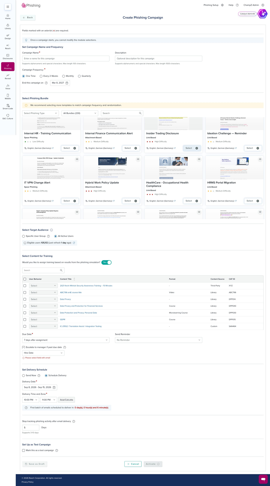
Want to go deeper on this one?
Happy to walk through the workflow decisions and what we learned after launch.